For instance, consider the tree
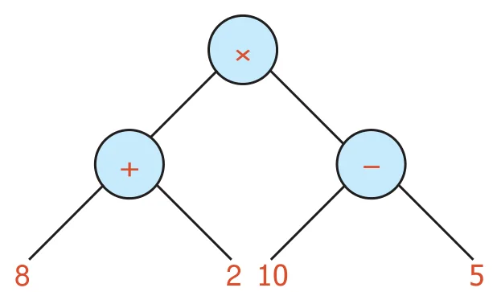
We could first find
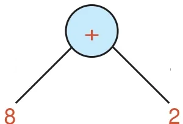
as 10, then
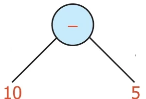
as 5
When we multiply the results 10 and 5 we get 50. When the nodes for addition and subtraction are interchanged the value remains the same which is represented using tree diagram as given below.
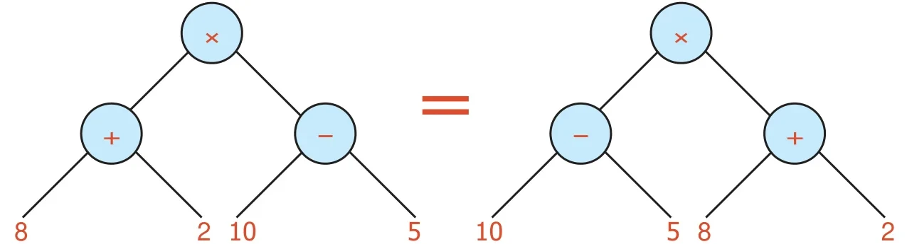
Does it mean that the branches also can be interchanged? Yes, when the node represents addition it is possible.
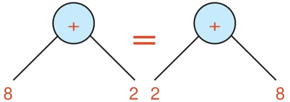
But it is not possible when the node represents subtraction.
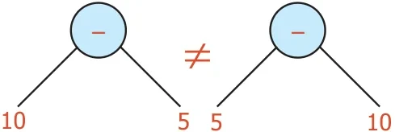
Therefore from this tree diagram.
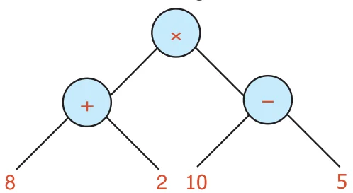
The expression can be converted into either \((10 - 5) \times (8+2)\) or \((8+2) \times (10 - 5)\) or \((2+8) \times (10 - 5)\) or \((10 - 5) \times (2+8)\) without changing the value.
Example 11: Convert the tree diagram into numerical expression.
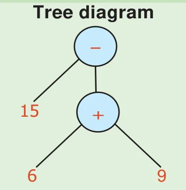
Numerical Expression
\(15-(6+9)\)
Example 12: Convert the Tree diagram into a numerical expression.
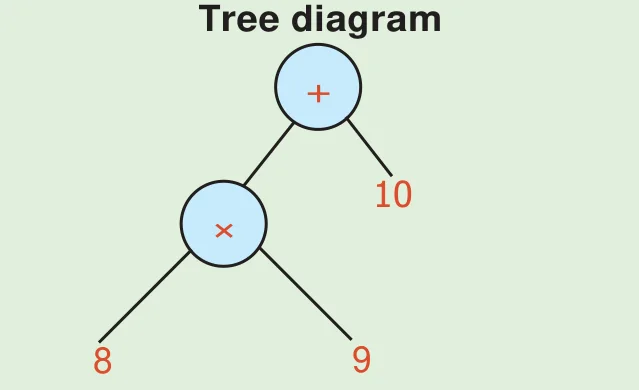
Numerical Expression
\((8 \times 9)+10\)
Example 13: Convert the Tree diagram into a numerical expression.
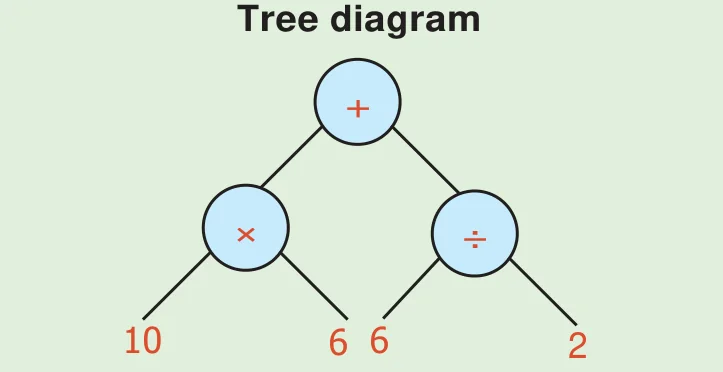
Numerical Expression
\((10 \times 6)+(6 \div 2)\)
Example 14: Convert the Tree diagram into a numerical expression.
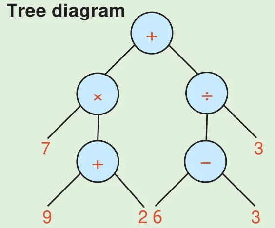
Numerical Expression
\([(9+2) \times 7]+[(6-3) \div 3]\)